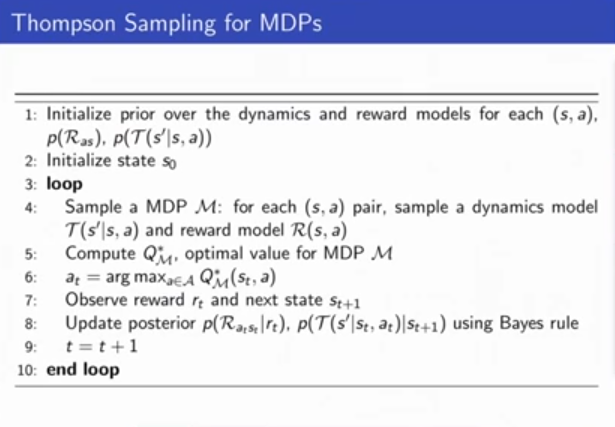
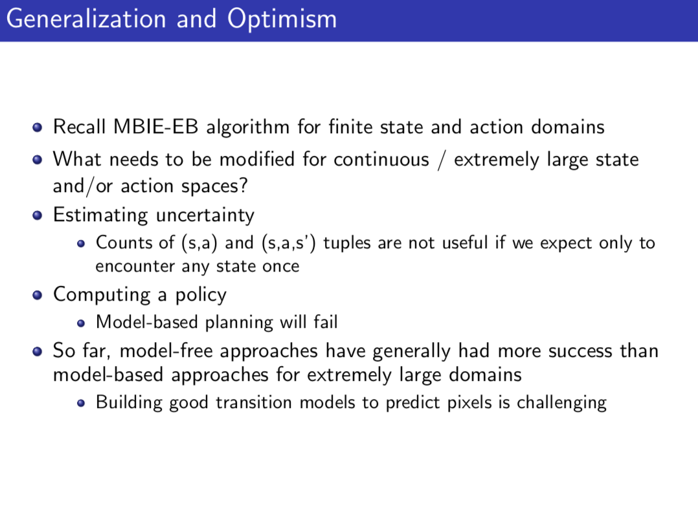
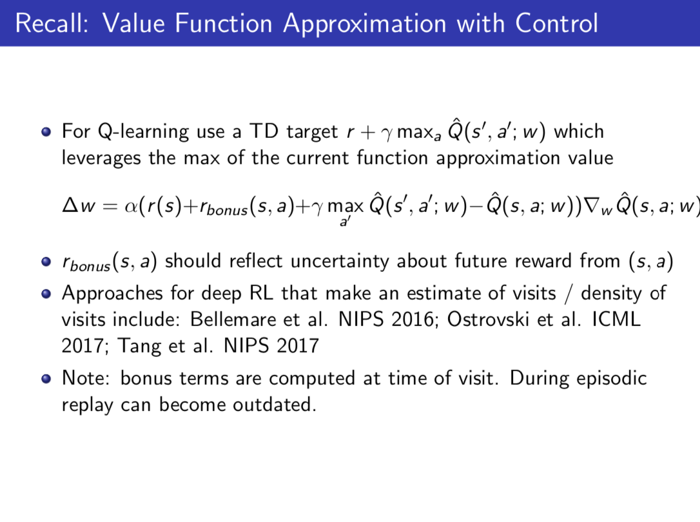
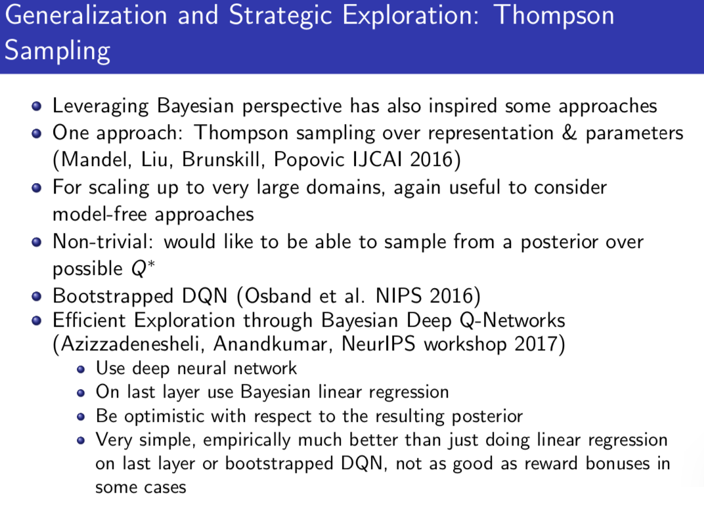
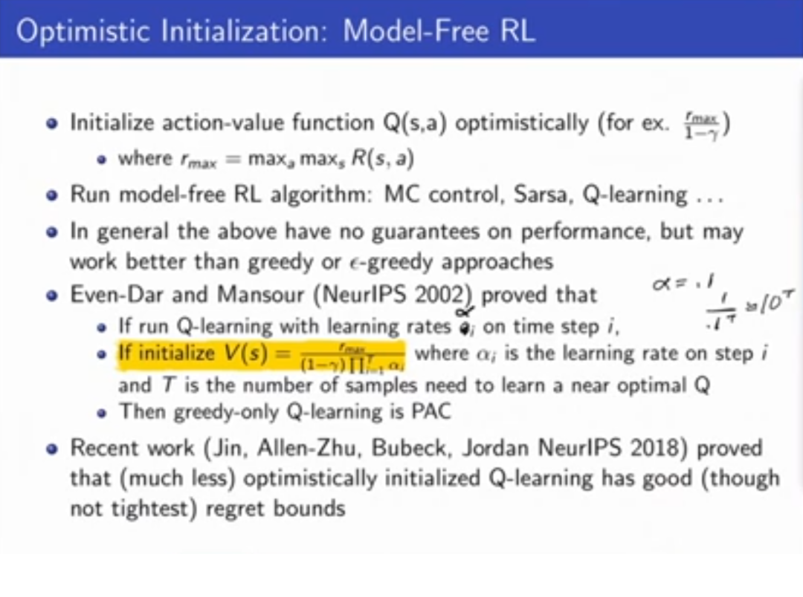
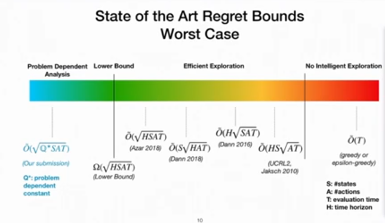
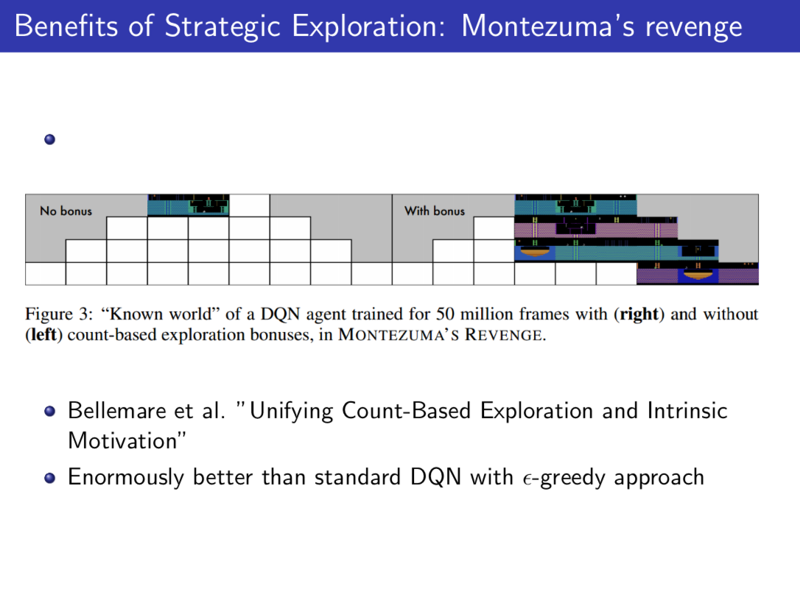

Note: Everything in this lecture is in the model-based (tabular MDP) setting. Extending it to the general model-free setting is an important on-going research topic.
Probably Approximately Correct
Issue: Cumulative Regret does not distinguish between a lot of small errors and a few huge errors. Idea - PAC: Bound the number of non-small errors.
Formally, an algorithm is PAC if it chooses an action a whose value is ϵ optimal (Q(a)≥Q(a∗)−ϵ) with probability at least 1−δ on all but a polynomial nuber of steps in the domain (Domain is # actions, ϵ, δ, etc). Most PAC algorithms are based on optimism of Thompson Sampling.
In Bandits we tend to use regret for evaluation, but in MDPs we tend to use PAC.
PAC vs Regret
Regret compares the state with respect to the most optimal discussion you could ever have made globally. It always judges the score compared to if it had made optimal decisions forever, and is a pretty harsh criteria.
PAC judges the score under the state distribution reached under the algorithm. PAC compares the algorithm to the optimal algorithm given the current state space you are in. (This is the meaning of Q(a∗), which is the optimal value that you can attain from now on only looking into the future, ignoring whatever you could have attained if you had made other decisions in the past.) Empirically, this is why the PAC values tend to be must smaller than regret values.
MDPs
Optimistic Initialization
Initiate action-value function Q(s,a) optimistically (eg rmax/(1−γ)).
Empirically works pretty well, although no theoretical guarentees. Papers in Appendx 1
Approaches
- Be very optimistic until confident that empirical estimates are close to true dynamics/reward parameters by maximum likelihood (Brafman and Tennenholtz 2002)
- Be optimitisic given the information we have
- Compute confidence sets on dynamics and reward models (confidence bounds), or
- Add reward bonuses that depend on experience/data (see below)
Reward bonuses are the easiest to extend to the model-free case and work just as well as confidence sets.
PAC Algorithms for Tabular (Model-Based) Settings
MBIE-EB Model-Based Interval Estimation with Exploration Bonus
We suppose in this setting the rewards are bounded between 0 and 1.
Given ϵ,δ, some constant m.
- We keep track of some counts:
- nsa(s,a) the number of times we saw each (s,a) pair,
- nsas(s,a,s′) the number of times we saw each (s,a,s′) pair.
- rc(s,a) the running sum of rewards we've gotten for any state-action pair for all time.
- Define: β=11−γ0.5ln(2|S||A|m/δ)‾‾‾‾‾‾‾‾‾‾‾‾‾‾‾‾√
- Initialize all above values to 0 and also initialize some state.
- Initialize Qt(s,a)=11−γ∀s∀a. This is the most optimistic value function possivle since rewards are bounded between 0 and 1.
Algo: Loop until convergence
- Update the actions: at=argmaxa∈AQ(st,a)
- Observe reward rt and state st+1
- Update the counts and the reward sum:
- nsa(st,at)=n(st,at)+1,
- nsas(st,at,st+1)=nsas(st,at,st+1)+1,
- rc(st,at)=rc(st,at)nsa(st,at)+rt
- Next, we estimate a running empirical reward model and transition model:
- R̂ (s,a)=rc(st,at)nsa(st,at)
- T̂ (s′|s,a)=nsas(st,at,st+1)nsa(st,at)∀st+1∈S
- Finally, we update Q(s,a) using value iteration, using our empirical estimates of the reward model R̂ (s,a) and transition model T̂ (s′|s,a), and add in a reward bonus which is different for each state action pair. Note that we could also do this with alogirhtms other than value iteration: While not converged, do:
- Q(s,a)=R̂ (s,a)+γ∑s′T̂ (s′|s,a)maxa′Q(s′,a′)+βnsa(s,a)√reward bonus term∀s∈S,a∈A
- Above, the reward bonus term depends on β and the number of times we have tried that state-action pair.
- Idea: Anyting we haven't sampled before will look maximally awesome, and anything else will be a combination of its empirical average reward plus a reward bonus, and the reward bonus will get smaller as we gather more data.
You can also think of the above as solving a new MDP with the same transitions as the old MDP, but with additional reward bonus for states we have explored less.
This algorithm is PAC - It's value is ϵ optimal (Q(a)≥Q(a\*)−ϵ) with probability at least 1−δ on all but a polynomial number of steps.
MBIE-EB algorithm is much better compared to other algorithms including greedy. Appendix 2.
Bayesian Model-Based RL - Thomspon Sampling for MDPs
Maintain posterior distribution over MDP models.
Estimate posteriors for both transitions p(T|ht) and rewards p(R|ht). R is usualyl simmilar to Bandits (Bernoulli using Beta prior) or Multinomial/Dirchlet), and usually T is a Multinomial using Dirchlet prior (Direchlet distribution parameterized by number of times each of the multinomial states was visited).
Thompson Sampling for MDPs
Initialize prior over dynamic model p(T(s′|s,a) and rewards model p(Ras) for each (s,a), initialize start state.
Loop t = 1,2,3,...
- Sample an MDP M: for each (s,a) pair, sample a dynamics model T(s′|s,a) and a reward model R(s,a)
- Compute Q∗M, the optimal value for the sampled MDP, and update at=argmaxa∈AQ∗M(st,a).
- Observe reward rt and next state st+1.
- Update posterior p(T(s′|s,a)|st+1, p(Ras|rt) using Bayes rule
end loop
Thompson sampling also implements probability matching and empirically also does really well. Generalizes to non-tabular MDPs, but kind of poorly. (Ben Van Roy's work on Thomspon Sampling for MDPs, Called Posterior Sampling).

Generalization
Recall PAC ensures epsilon-optimality almost all of the time except for timesteps polynomial in the state space. However, this is not useful if the state space is infinite or really large (ie pixels). How can we genrealize it to those cases?
Very active area of current research. A long way to go with theory still. No good asymptotic guarees for some of the basic algorithms. So even further than finite sample MDPs.
Recall MBIE-EB algo for finite state and action domains. What meeds to be modified for continupus/extremely large state or actions spaces? We need some way to generalize our state space, replacing the running counts we keep in the discrete space, that say "for this state I visited, similar states all will have their optimism bonus reduced". (Some sort of state embedding in a distance metric).
Most work on this is based on model-free RL, since model-based RL is very hard to scale, errors in your model specification make planning very hard. I.e. Do value function approximation with a reward bonus/exploration bonus term. Much research has been done as to the paramterization of the reward bonus term. (Appendix 3)
- ie. density estimate model, hash-based /bucket-based discretization of continuous state spaces, etc


Idea: You can do thompson sampling over state presetnation and also the parameters. However, hard to scale up

The last paper (Bayesian Linear Regression on top of DNN last layer to add back uncertainty performs very good).
Appendix 1

The Even-Dar and Mansour intial value is huge, because the denominator is vanishignly small. Only a theoretical value, not useable.
Appendix 2: Sufficient Conditions to make an RL Algorithm PAC
A lot of proofs to show algorithms are PAC follow similar lines to logic to below.
If the below 3 conditions are satisified, then an RL algorithm is PAC - that is, is O(ϵ) optimal 1−δ of the time on all but N=(ξ(ϵ,δ)ϵ(1−γ)2ln(⋯)) time steps.
- Optimism: Computed value of the algorithm is greater than or equal to the true optimal value of the state action pair minus epsilon for all time steps Qt(st,at)≥Q∗(st,at)−ϵ∀s,a,t
- Accuracy: The computed value of Vπtt(st) minus Vπtμ, which is a "half-optimistic" MDP in between our optimistic MDP and the real MDP, is within epsilon. Vπtt(st)−Vπtμ(st)≤ϵ
- Bounded Learning Complexity: Total number of Q updates must be bounded, and the number of times we visit an known state action pair must be bounded by a function ξ(ϵ,δ).
- Strehl, Li, Littleman (2006) Incremental Model based learners with Formal Learnign Guarentees
Using above to show that MBIE-EB is PAC:
-
Optimism: We show that Q(s,a)=R̂ (s,a)+γ∑s′T̂ (s′|s,a)maxa′Q(s′,a′)+βnsa(s,a)√ is an upper bound to the true Q∗. Consider some state action pair (s,a), such that nsa(s,a)<m (1).
Define Xi:=ri+γV∗(si) where ri is the reward from the ith time we sampled (s,a), and V∗(si) is the value of the next state we got to on the ith time that we sampled (s,a).
Then 𝔼[Xi]=Q∗(s,a). Using Hoeffding (or some similar probability bound), we can prove that
P⎛⎝⎜⎜Q∗(s,a)−1n(s,a)∑i=1n(s,a)Xi≥βn(s,a)‾‾‾‾‾‾√⎞⎠⎟⎟≤e−2β2(1−γ2)=δ/(2|S||A|m)<<1(1)
Where the last equiality is from plugging in β=11−γ0.5ln(2|S||A|m/δ)‾‾‾‾‾‾‾‾‾‾‾‾‾‾‾‾√.
The above says, as you get more and more samples of this particular state-action pair, how far away could you be from optimal if you didn't know V∗, and the proof says that the probability of divergence more than βn(s,a)√ is very small.
Note: 1n(s,a)∑n(s,a)i=1=R̂ (s,a)+γ∑s′T̂ (s′,s,a)V∗(s′). Optimism can be proven by induction. Note: (1) can thus be rewritten This is almost the same as the MBIE-EB update equation above, except with V∗(s′) in place of maxa′Q(s′,a′). This means that if you have a number of samples, you can bound the difference between the above and Q^*
-
Accuracy:
Define: known (s,a) pairs - pairs for which we have sufficient data such that their estimated model is close to the true model. (s,a) where R̂ (s,a) and T̂ (s′|s,a) is close to true R(s,a), T(s′|s,a). If all (s,a) pairs are known, we can show that |Vπ∗−Vπ∗μ|≤f(ϵ). Let the known set of (s,a) pairs be called K. The below result is known as the simulation lemma: If models are close, transition and reward model is close to the true transition and reward model, your empirical value function is also close to your true value.
i.e. you can propagate empirical predictive error to control error. If you have good predictive error, you can end up with small control error. The known state action pairs are a way to quantify what level you need to be 'good enough', depending on whatever epsilon you want.
Define M′: An MDP where its rewards and transition model (R′,T′ are
- equal the true reward and transition model R,T on all (s,a) in the known set K.
- equal the M̃ reward and transition model R̃ ,T̃ on all (s,a) not in the known set K.
Define M̂ ′: An MDP where its rewards and transition model (R̂ ′,T̂ ′ are
- equal the empirical reward and transition model R̂ ,T̂ on all (s,a) in the known set K.
- equal the M̃ reward and transition model R̂ ,T̂ on all (s,a) not in the known set K.
We can use these to define a series of inequalities that relate the values we get in our empirical policy and the values that we get in our optimal policy -> we use these to prove accuracy.
-
Bounded Learning
Use the pigeonhole principle to divide your stream of experiences into episodes, and consider the probabilty of reaching an known (s,a) pair in T steps. If this probability is small, we are near optimal on the known (s,a) pairs. If this probability is large, this can't happen too many times. Since we assumed for each unknown (s,a) pair, we only visit it m times, so we will eventulaly run thorugh all of them, and by the pigeonhole principle, this probability will be bounded. (i.e. We will make a bounded number of bad decisions).
(1) Suppose that in our algorithm, we only use the first m samples of (s,a) to compute R̂ and T̂ , after that we throw away our data. We do this to make the high probability bound work. (Empirically and in other proofs you can remove this restriction but we use it to make the proof work).

Appendix 3: Exploration Bonus Improves Performane on Montezuma’s Revenge Significantly
